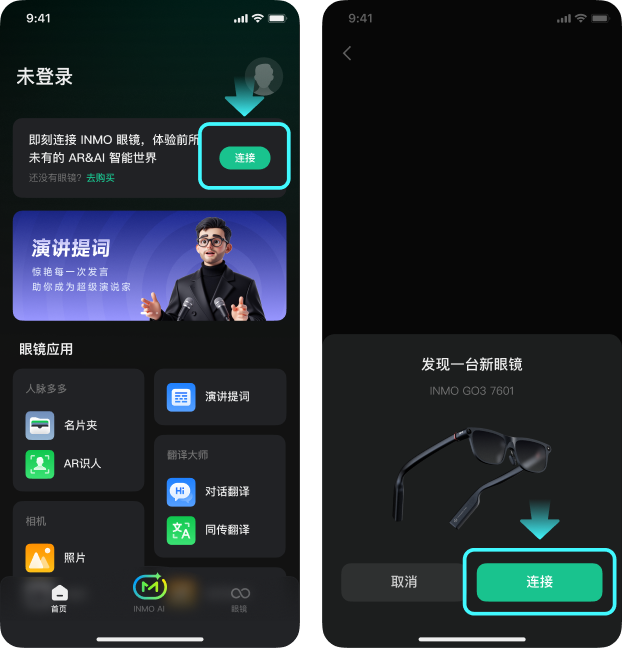
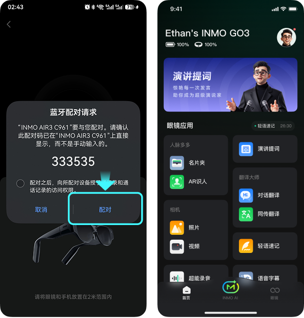
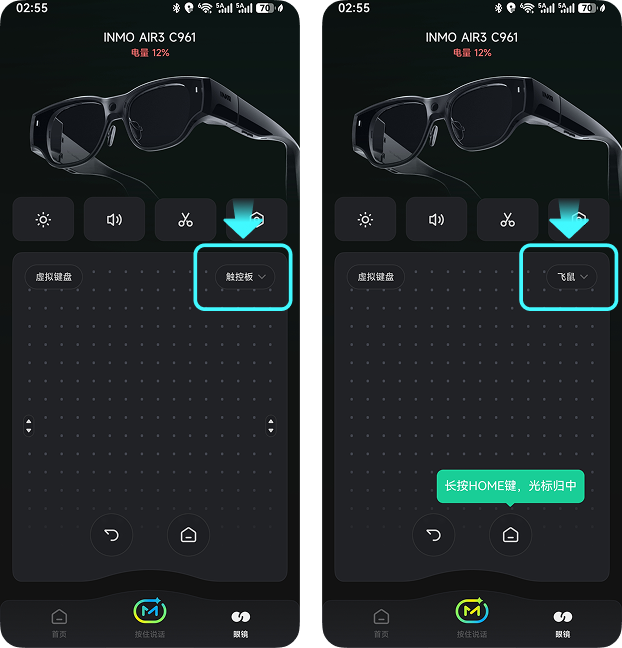
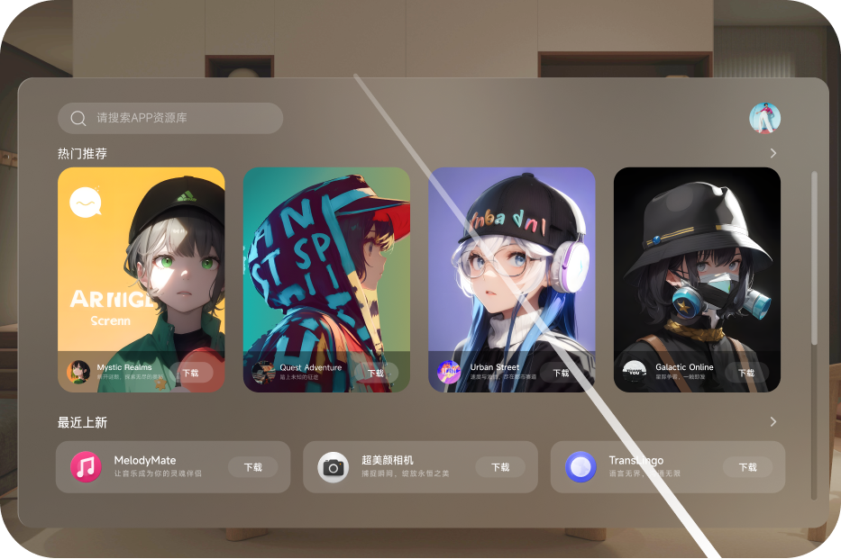
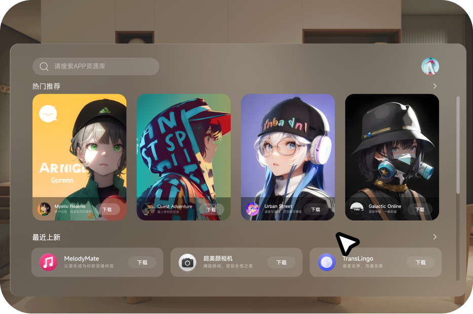

01.手机APP与眼镜连接
- 打开手机APP，保证AIR3处于开机状态
- 首页点击右上方的【连接】按钮，开始搜索眼镜
- 搜索到附近未配对的AIR3设备
- 确认眼镜的蓝牙地址后4位点击【连接】

- 点击连接后，手机和眼镜会弹出蓝牙配对请求
- 眼镜和手机都需要点击【配对】
- 连接成功后即可使用

02.手机APP触控板功能介绍
使用虚拟键盘输入
点击"虚拟键盘"按钮，手机App将弹出输入法键盘。此时，在眼镜端有输入框的界面，您可直接用手机键盘输入文字，内容将实时同步至眼镜

切换与控制射线模式
- 戒指：长按功能键，校准画面和射线终点到视野中心；
- 点击Fn键，校准画面和射线终点到视野中心；
- 面前80%为空白区域时，支持点击触摸板确认，一键将射线、桌面/应用浮窗校准到面前；
- 单击返回键，此时焦点在哪个应用上，就返回哪个应用的上一级

触控板
- 侧边滑动、顶部滑动，此时焦点在哪个应用上，就哪个应用响应，逻辑和2D模式下的Touchpad相同；
- 单击返回键，此时焦点在哪个应用上，就返回哪个应用的上一级
